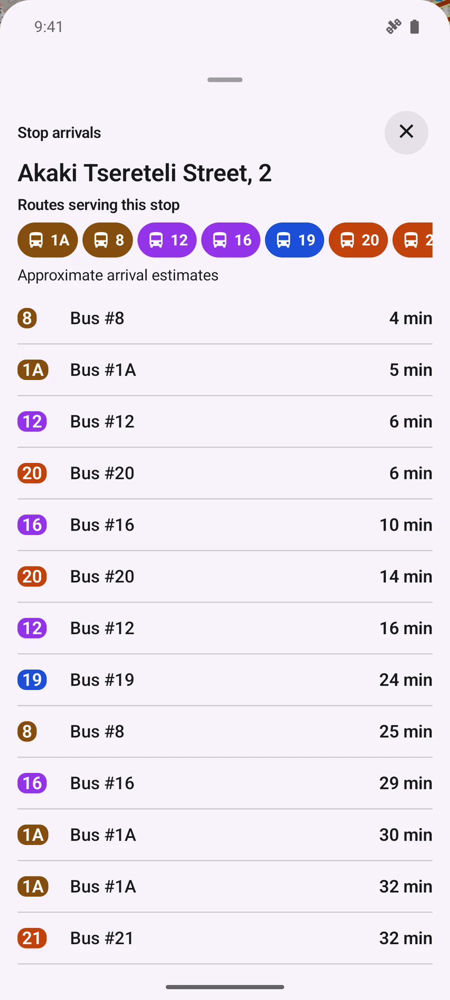
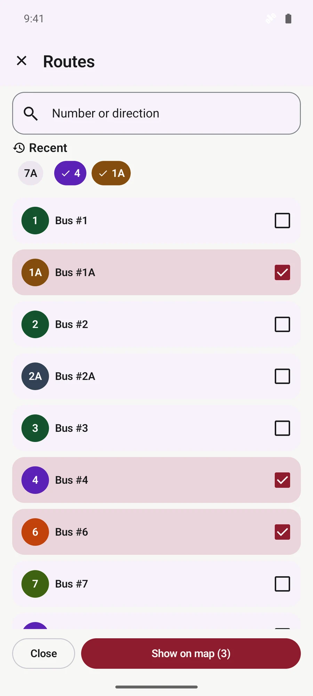
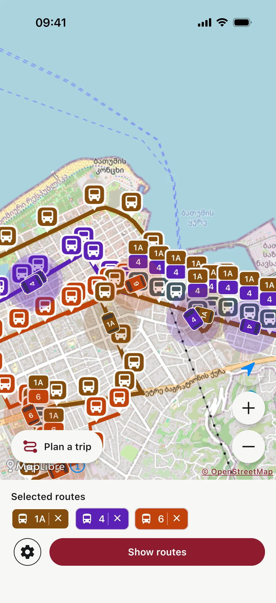

การขนส่งสาธารณะในจอร์เจีย
รถประจำทางในบาตูมี คูไตซี ซุกดิดี และบอร์โจมี
ค้นหาสายรถและป้ายรถบนแผนที่ ดูว่ารถคันถัดไปจะมาถึงเมื่อไร และวางแผนการเดินทางในเมืองที่รองรับ
- ไม่ต้องสมัครสมาชิก
- ธีมสว่างและมืด


สายรถและป้ายรถในแต่ละเมือง
-
รถบัสในบาตูมี
ติดตามรถบนแผนที่ ดูสายรถ ป้ายรถ และเวลาถึงโดยประมาณ พร้อมวางแผนการเดินทาง
-
รถบัสใน คูไตซี
ดูตารางเดินรถตามสาย ทิศทาง และวันที่ พร้อมตำแหน่งรถ ป้ายรถ และเวลาที่รถคันถัดไปจะมาถึง
-
รถบัสใน ซุกดิดี
ค้นหาเส้นทางรถประจำทางตามหมายเลขและดูตำแหน่งป้ายรถเมล์โดยประมาณบนแผนที่
-
รถบัสใน บอร์โจมี
รถห้าสายออกจากตลาด พร้อมรายชื่อป้ายทั้งขาไปและขากลับ
ก่อนออกเดินทางและระหว่างทาง
-
รถบัสบนแผนที่
ติดตามรถโดยสารที่กำลังเคลื่อนที่ใน บาตูมี และ คูไตซี ใช้ปุ่มตำแหน่งเพื่อค้นหาตัวเองบนแผนที่และดูป้ายหยุดในบริเวณใกล้เคียง
-
ตารางเดินรถและเวลาถึงป้าย
แตะป้ายรถเพื่อดูสายที่ผ่าน ในบาตูมีและคูไตซี คุณดูเวลาที่รถคันถัดไปจะมาถึงได้ ส่วนคูไตซียังมีตารางเดินรถให้ค้นหาตามสาย ทิศทาง และวันที่
เวลาที่มาถึง บาตูมี ประเมินจากการเคลื่อนตัวของรถบัส

-
ค้นหาสายรถที่ต้องการ
ค้นหาตามสายหรือทิศทาง แล้วเลือกได้หลายสายพร้อมกัน แผนที่จะแสดงแนวเส้นทางและตัวรถด้วยสีประจำสาย คุณเลือกสายที่เพิ่งดูซ้ำได้ทันที


วางแผนจากต้นทางถึงปลายทาง
เลือกต้นทางและปลายทางบนแผนที่ แล้วแตะค้นหาเส้นทางเพื่อเปรียบเทียบเวลาเดินทาง ระยะทางเดิน และจำนวนครั้งที่ต้องเปลี่ยนรถ
- แนะนำ
- เร็วที่สุด
- เดินน้อยที่สุด
- ไม่ต้องเปลี่ยนรถ
- ช่วงที่ต้องเดิน
- ดูระยะทางและเวลาโดยประมาณที่จะถึงจุดจอด ระหว่างจุดจอดและไปยังจุดหมายปลายทางของคุณ
- เวลารอและเวลาบนรถ
- ดูว่ารถบัสคันไหนที่จะขึ้น สถานที่ขึ้นและลง และเวลารอและนั่งรถโดยประมาณ
ขณะนี้การวางแผนการเดินทางมีให้บริการใน บาตูมี ระยะเวลาการเดินทางเป็นเพียงการประมาณการ
เว็บไซต์และแอปของ Georgia Transit
เปิด Georgia Transit ในเบราว์เซอร์หรือ Telegram ของคุณ ลิงก์ร้านค้าจะปรากฏที่นี่เมื่อมีการเปิดตัวแอป
-
Android
แอปสำหรับโทรศัพท์ Android
ลิงก์จะเปิดให้ใช้งานเร็ว ๆ นี้ -
iOS
แอปสำหรับไอโฟน
ลิงก์จะเปิดให้ใช้งานเร็ว ๆ นี้ -
เว็บ
ในเบราว์เซอร์ของคุณบนโทรศัพท์หรือคอมพิวเตอร์
เปิดเว็บแอป -
Telegram
แอปขนาดเล็กภายใน Telegram
เปิดใน Telegram